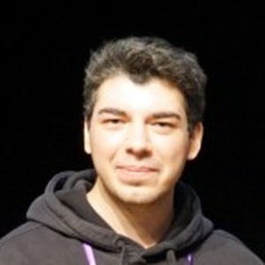

Kadir Toptaş
Game Developer
About Me
I am Kadir Toptaş, an Unreal Engine Developer at Leartes Studios, where I work on plugins such as Cross Engine: Blender ↔ Unreal Bridge, Project Optimization Toolkit and NWIRO AI Pro.
I started with Unity and published two mobile games on Google Play, then moved to Unreal Engine and went from Blueprint to C++. Below you can find the tools I work on, the mechanics, prototypes and cinematics I have built.
Technical Skills
Game Engines
Programming Languages & Libraries
![SFML Logo](data:image/svg+xml,%3Csvg%20xmlns='http://www.w3.org/2000/svg'%20viewBox='0%200%2024%2024'%3E%3Cpath%20fill='%238CC445'%20d='M12.187.3336C11.1144.312%209.8776.863%207.9587%202.241L3.162%205.7258C.252%207.8401-.839%208.5272.6917%2013.3288l1.8322%205.639c1.1115%203.4208%201.4278%204.6711%206.4675%204.6991H14.92c3.5969%200%204.884.085%206.4678-4.6991l1.8319-5.639c1.1115-3.421%201.5903-4.618-2.4703-7.603L15.953%202.241h-.0004C14.4069%201.1178%2013.4026.358%2012.187.3336zm-.1624%201.8837c.0652.0015.1303.0048.1953.01%201.0784.0831%201.6791.6384%202.3401%201.1186l.0193.0193-2.128%208.1684h-.9257L9.404%203.3652c.0067-.006.0118-.0137.0192-.0193.7741-.5944%201.5245-1.0708%202.4109-1.125l.1905-.0036zM16.128%204.489h.0008l.0896.0643%203.8771%202.8158c.9207.632%201.6776%201.2778%201.9282%202.3144.2542%201.0514-.0947%201.7946-.3472%202.5716l-2.1082%206.506c-.3166%201.0708-.699%201.9873-1.6073%202.5459-.9213.5666-1.7352.4693-2.5523.4693H8.568c-1.117.03-2.1064-.0413-2.9187-.7329-.8236-.7012-.982-1.5052-1.2344-2.2823l-2.1151-6.506c-.3745-1.0545-.6065-2.021-.1993-3.0087.4123-1%201.1262-1.397%201.7872-1.8773l3.8767-2.8158.0835-.0579.8358%203.208-.2121.1543-2.771%202.0058c-.5628.409-.667.5092-.7135.5465.012.0598.0363.2851.2379.8486l2.1279%206.5446c.1988.6723.2754.8034.2958.855.0652.0084.2856.0495.8743.0322h6.8853c.6295%200%20.8264-.0174.8997-.0193.0264-.0569.1413-.252.3086-.8229l2.1281-6.551c.194-.5974.2404-.804.2571-.8615-.048-.0451-.2023-.2149-.6879-.5464l-2.803-2.0316-.2186-.1607.8358-3.208h-.0001z'/%3E%3C/svg%3E) SFML
SFML Raylib
Raylib![WebGL Logo](data:image/svg+xml,%3Csvg%20xmlns='http://www.w3.org/2000/svg'%20viewBox='0%200%2024%2024'%3E%3Cpath%20fill='%23FFFFFF'%20d='M3.489%2010.164c-.565.548-.885%201.172-.885%201.835%200%202.167%203.415%203.921%207.631%203.921%202.339%200%204.437-.484%205.837-1.335-1.533%201.426-4.265%202.43-7.385%202.43C3.89%2017.015%200%2014.769%200%2011.999s3.89-5.014%208.689-5.014c3.131.002%205.872%201.009%207.398%202.444-1.399-.856-3.504-1.351-5.852-1.351-2.506%200-4.73.621-6.121%201.579l.785%203.395.971-3.481h.737l.971%203.481.805-3.481h.805L7.953%2014.11h-.717l-.991-3.566L5.24%2014.11h-.714zm19.839%203.48h-.162v.424h-.142v-.424h-.164v-.122h.468zm.064-.122h.209l.095.364.096-.364H24v.546h-.133v-.415h-.002l-.113.415h-.109l-.115-.415h-.003v.415h-.133zm-5.699.515c-.2.084-.399.126-.601.126-.319%200-.608-.055-.863-.166q-.3825-.1665-.645-.459c-.175-.195-.311-.424-.404-.688-.093-.263-.14-.547-.14-.851%200-.313.047-.601.14-.869.093-.269.226-.502.402-.699.175-.2.39-.355.645-.468s.541-.171.863-.171c.215%200%20.421.034.621.098.199.064.381.16.543.284s.295.279.399.463.169.395.193.632h-.874c-.055-.233-.159-.408-.315-.525-.155-.118-.343-.176-.567-.176-.207%200-.382.04-.526.12s-.262.187-.35.322a1.41%201.41%200%200%200-.196.459c-.039.171-.062.348-.062.532%200%20.175.02.346.062.512.04.167.107.315.196.448.088.133.206.24.35.32s.319.119.526.119c.303%200%20.539-.077.705-.23s.262-.375.29-.668h-.922v-.689h1.75v2.255h-.584l-.093-.472c-.162.21-.344.357-.543.441m2.708-4.14v3.395h2.033v.774h-2.949V9.897zm-9.204%201.585c.109.151.191.337.251.557.053.21.08.452.08.716v.047H9.372c.011.41.164.876.807.876.45%200%20.703-.344.719-.537l.002-.042h.592l-.007.051c-.008.075-.051.222-.135.377-.049.086-.104.166-.166.239a1.3%201.3%200%200%201-.248.218c-.071.046-.158.1-.287.139-.148.047-.326.069-.543.069-.415%200-.763-.151-1.007-.434a1.43%201.43%200%200%201-.266-.482c-.06-.182-.091-.386-.091-.601%200-.485.12-.896.348-1.186.125-.158.278-.28.457-.362.191-.086.41-.131.654-.131.218%200%20.413.043.581.127.165.082.304.202.415.359m-1.064.047c-.402%200-.741.357-.765.785h1.543c-.046-.528-.302-.785-.778-.785m4.373.388c.058.182.086.381.084.588%200%20.19-.022.385-.064.563-.049.206-.122.39-.22.545-.11.178-.252.318-.419.415-.186.109-.408.164-.654.164-.228%200-.426-.057-.585-.173a.89.89%200%200%201-.198-.193v.282h-.561V9.983h.59v1.393c.093-.111.202-.2.324-.262.146-.078.313-.118.497-.12.199%200%20.383.04.547.118.158.075.295.184.408.324.109.135.193.297.251.481m-.53.67c0-.2-.013-.459-.111-.672-.12-.26-.335-.384-.654-.384-.3%200-.506.135-.628.417-.084.195-.126.452-.126.785%200%20.696.412.942.765.942.244%200%20.435-.102.565-.303.125-.191.189-.462.189-.785'/%3E%3C/svg%3E) WebGL
WebGL3D/2D Design & Texturing
![Krita Logo](data:image/svg+xml,%3Csvg%20xmlns='http://www.w3.org/2000/svg'%20viewBox='0%200%2024%2024'%3E%3Cpath%20fill='%233BABFF'%20d='M.652.76a.625.625%200%2000-.5.246c-.352.448-.035.898.362%201.262.206.189%201.77%201.794%203.428%203.527a11.054%2011.054%200%20011.815-1.983C3.667%202.515%201.694%201.266%201.461%201.1%201.201.914.917.762.652.76zm5.105%203.052c1.848%201.148%203.786%202.332%204.693%202.84%201.469.821%203.758%202.684%204.092%204.434.535.466%202.182%201.916%202.596%202.413.698-.211%201.518.133%202.06%201.12.866%201.583.227%203.747-1.968%204.988a5.42%205.42%200%2001-.296.267l.296-.267c1.14-1.468-.714-2.44-1.175-3.864a2.06%202.06%200%2001-.11-.78c-.533-.282-2.11-1.452-2.795-1.965-1.801.16-4.207-1.773-5.35-3.08-.7-.802-2.32-2.517-3.858-4.123a11.052%2011.052%200%2000-2.046%206.393A11.052%2011.052%200%201012.948%201.136c-2.64.004-5.19.954-7.19%202.676zm8.71%207.552c-.515.126-.968.831-1.118%201.306-.038.115-.04.303.066.342.802.592%201.556%201.168%202.4%201.7.162-.393.746-.963%201.096-1.2zm-11.53%201.639c.812%201.898%205.798%207.17%2012.06%202.695a2.07%202.07%200%2000.114.715c.46%201.42%202.36%202.427%201.238%203.89-2.135%201.364-5%201.201-6.989.528-3.558-1.204-5.914-4.332-6.424-7.828zm13.782.7a.771.771%200%2000-.065.049c-.004.003-.008.008-.011.008.003-.003.007-.008.01-.008.024-.015.044-.034.066-.048z'/%3E%3C/svg%3E) Krita
KritaVideo, UI/UX & Audio
My Work
Cross Engine: Blender ↔ Unreal Bridge
A real-time, two-way link between Unreal Engine 5 and Blender that I work on at Leartes Studios. Meshes, materials, cameras and lights move between the two apps without exporting and importing.
Key Features
- Live Transform & Selection Sync
- Materials Rebuilt as Blender Node Trees
- Change Review with Conflict Detection
Project Optimization Toolkit
An Unreal Engine editor extension from Leartes Studios that scores a project's health, maps asset references and cleans up what the project no longer uses.
Key Features
- Project Health Score (0–100, A–F Grade)
- Dependency Graphs & Circular Reference Detection
- Undoable Fixes & CI Commandlet
NWIRO AI Pro
An AI assistant and agent inside the Unreal Editor, built at Leartes Studios for faster world-building by developers, technical artists and environment teams.
Key Features
- AI-Assisted World Building
- Native Unreal Editor Integration
Modular Save
A production-ready save system for Unreal Engine from Leartes Studios, with slot-based saving, multiplayer support and Steam Cloud integration.
Key Features
- Slot-Based Save & Load
- Multiplayer-Ready Architecture
- Steam Cloud, AutoSave & Checkpoints
Batch Rename Tool
A batch rename tool for Unreal Engine from Leartes Studios that renames assets and actors together, with a live preview before any change is applied.
Key Features
- Live Preview & Reusable Presets
- Asynchronous Processing for Large Projects
- Name Collision Handling
Pivot Manager Tool
A Leartes Studios tool for adjusting actor and Static Mesh pivots in Unreal Engine quickly and safely, without breaking the scene.
Key Features
- Actor & Static Mesh Pivot Editing
- Scene-Safe Pivot Adjustments

Skibidi Stones
A stone-skipping rhythm game I developed in Godot with game designer Ege. Collect stones, skip them across the water with the right timing and try to escape the island. Released on itch.io for Windows and Linux.
Key Features
- Timing-Based Stone Skipping
- Leaderboard
- English & Turkish Localization
Anti-Gravity Field Mechanic
Designed a field that applies a unique gravitational force to any object that enters it, complete with custom materials, textures, and a post-process effect to visually signal the player's presence within the zone.
Key Features
- Physics Volume Implementation
- Custom Materials & Post-Process Effects
Bow and Arrow Mechanic
A third-person archery simulation where arrows follow a natural trajectory via physics simulation. The bow's tension and arrow velocity are determined by how long the player holds the fire button.
Key Features
- Physics-Based Projectile Trajectory
- Charge-Up Shot Mechanic
Dungeon Adventure Game
A 2D combat game where players fight off waves of enemies using a sword or bow. Developed using the PaperZD plugin for advanced 2D animation and state management in a 3D engine.
Key Features
- 2D Animation with PaperZD
- Wave-Based Enemy Spawning
Enemy AI with Variations
Developed a complex AI system featuring four distinct archetypes (Melee, Ranged, Mage, Boss). Each AI has unique patrol mechanics, audio sensitivity, target acquisition, combat skills, and custom animations for taking and dealing damage.
Key Features
- Behavior Tree & State Machine AI
- Audio & Visual Perception System
- Multiple AI Archetypes
Fall Damage System
A system that plays different fall and landing animations based on the fall height and applies damage accordingly. This adds a layer of realism and risk to vertical traversal.
Key Features
- Height-Based Damage Calculation
- Contextual Animation System
Flight System
A multi-mode flight mechanic featuring standard flight, a slower cinematic mode, and a supersonic mode for rapid acceleration and traversal, giving players granular control over their movement speed.
Key Features
- Multi-Mode Movement System
- Cinematic Camera Controls
FNAF Camera System
A functional clone of the camera system from the Five Nights at Freddy's series. Players use an in-game tablet to switch between security cameras to monitor rooms and control environmental elements like doors.
Key Features
- Interactive UI (UMG)
- Dynamic Camera Switching
Functional Black Holes
Created two distinct types of black holes with opposing behaviors: a blue one that pulls nearby physics objects into its vortex, and an orange one that expels them, creating dynamic environmental puzzles.
Key Features
- Advanced Physics Manipulation
- Custom Visual Effects (VFX)
Grid Inventory System
A grid-based inventory system where items can be stacked up to a certain limit. Players can rotate items to efficiently manage their inventory space, adding a strategic layer to item management.
Key Features
- Grid-Based UI Logic
- Item Stacking & Rotation
GTA Character Transition
A recreation of the instant character-switching mechanic from GTA V. The system seamlessly transitions the camera and player control to another character's position, including a faithful replication of the iconic zoom-out/zoom-in transition effect.
Key Features
- Seamless Character Switching
- Advanced Camera Control & VFX
Hang and Swing Mechanic
A complex traversal mechanic allowing the character to hang from ledges and swing to the next reachable surface. The system uses six different collision checks to accurately calculate attachment points, swing arcs, and release trajectories.
Key Features
- Multi-Collision Detection System
- Physics-Based Swing Mechanic
HD2D Style Game
A game prototype in the HD2D style, featuring 2D pixel art characters (created with PaperZD) in a 3D environment. Implemented NPC dialogue, a follower system, and an occlusion mask to keep the player visible behind buildings.
Key Features
- HD2D Visual Style (2D in 3D)
- NPC Follower AI & Dialogue System
- Character Occlusion Mask
Jumpscare System
A horror game mechanic where an enemy AI pursues the player upon sight or sound detection. If caught, the system triggers a jumpscare event, enhancing the suspense and player feedback.
Key Features
- AI Perception (Sight/Sound)
- Triggered Cinematic Events
Ledge Climb System
A sophisticated climbing system that uses eight different collision checks to detect climbable surfaces and ledges. The character can perform long jumps to distant ledges and dynamically adjusts animations based on surface proximity (feet on wall vs. hanging).
Key Features
- 8-Point Collision Detection
- Contextual & Procedural Animation
Narrow Passage System
A contextual movement system for navigating tight spaces. It calculates the entry angle and passage width to determine if the character can enter and plays the appropriate animation.
Key Features
- Context-Aware Movement
- Procedural Animation Selection
Shooting Pistol System
A complete pistol combat system featuring firing, reloading, and holstering mechanics. The system includes projectile hit detection, damage application on destructible objects, bullet hole decals, and tracer effects.
Key Features
- Line Trace Hit Detection
- Weapon State Management
- Decals & Particle Effects
Planet Shaders and Materials System
Using real planet textures from NASA, I created a modular system where materials and shaders dynamically react to the angle of a simulated sun. This creates realistic lighting and shadows on the planets, and the system works with any custom texture.
Key Features
- Dynamic & Modular Material Shaders
- Realistic Lighting Simulation
Power Cable Mechanic
A puzzle mechanic where players activate objects by stepping on connected pressure plates. The power effect travels along the cable visually, with the "charge" duration depending on how long the plate is held down.
Key Features
- Event-Driven Puzzle Logic
- Dynamic Material Effects
Pressure Plate with Physics
A fully physics-based pressure plate system. Players can solve puzzles by picking up and placing objects of varying weights onto the plates to trigger interactions, rather than relying on simple triggers.
Key Features
- Physics-Based Interaction
- Weight-Sensitive Triggers
Procedural Room Generator
A highly modular system that generates unique room layouts every time. The generation logic is fully customizable, allowing control over room spawn frequency, loot tables, and architectural styles.
Key Features
- Procedural Content Generation (PCG)
- Modular & Customizable Logic
Push, Pull and Zipline Mechanic
A set of traversal and puzzle mechanics. Players can push and pull interactive boxes to reach new areas, and use ziplines to quickly traverse long distances.
Key Features
- Physics-Based Object Interaction
- Spline-Based Movement (Zipline)
Reverse Time Mechanic
A time manipulation mechanic that allows the player to rewind their character's position, rotation, and camera angle, enabling unique puzzle-solving and "undo" opportunities.
Key Features
- State-Saving & Reversal
- Time Manipulation Gameplay
Roll Dash System
A fluid and responsive movement system for combat and traversal. The character can perform an 8-directional dodge roll and an instant dash for quick repositioning.
Key Features
- 8-Directional Movement
- Advanced Animation Blending
Root Motion Locomotion
An advanced locomotion system using Root Motion. It calculates the character's angle relative to the camera and the desired turn angle from player input to create exceptionally smooth and natural transitions between animations.
Key Features
- Root Motion Implementation
- Smooth Animation Blending & Transitions
Interactive Security Camera System
A system where players can interact with a monitor to view and switch between multiple security cameras placed throughout the level, similar to surveillance systems in stealth or horror games.
Key Features
- Render Target UI
- Dynamic Camera Management
Superliminal Clone
A project recreating the three core mechanics of the game Superliminal. Players solve puzzles by manipulating the size and perspective of objects. The project also features portals that alter object/player scale and decals that form 3D objects when viewed from the correct angle.
Key Features
- Perspective-Based Scaling Mechanic
- Portal System with Scale Manipulation
- Decal-to-3D Object Conversion
Swimming System
A comprehensive swimming system that detects water contact, depth, and whether the character is diving or surfacing. Includes integrated stamina and breath-holding mechanics for added realism.
Key Features
- Water Physics & Buoyancy
- Stamina & Breath Management
- Contextual Animation States
Take Hostage System
A stealth mechanic allowing players to approach characters from behind and take them hostage. If the hostage is eliminated, an active ragdoll effect is applied; if released, they return to their standard AI behavior.
Key Features
- Contextual Interaction System
- Active Ragdoll Physics
Telekinetic Skill Mechanic
A telekinesis ability where the character can lift and manipulate interactive objects within range. The pushing force increases the longer an object is held, and objects can be thrown or gently released.
Key Features
- Physics-Based Object Manipulation
- Charge-Up Force Mechanic
Tetris Clone
A classic 3D Tetris clone featuring six types of four-block tetrominoes and standard Tetris rules, built as an exercise in grid-based logic and game state management.
Key Features
- Grid-Based Game Logic
- Game State Management
3D Platformer Base
A starter template for a 3D platformer game. Includes essential mechanics like dynamic camera angles, wall grabbing/sliding, and a double jump, providing a solid foundation for further development.
Key Features
- Core Platformer Mechanics
- Dynamic Camera System
Top-Down Survival & Kingdom Builder
A survival game prototype developed in Unreal Engine where players build their own kingdom by gathering resources and constructing various buildings.
Key Features
- Modular UI Architecture: Designed a fully scalable UI from scratch, allowing new items to be added with a single click.
- Dynamic Resource Management: Implemented a system where different resources are gathered based on the equipped tool.
- Grid-Based Construction: Developed a dynamic construction mechanic for strategic settlement expansion.
- Original Art & Assets: All UI elements created from scratch using Blender and Illustrator.
Counter-Strike Clone
A simple, fully multiplayer FPS clone of Counter-Strike. Features two teams, multiple weapon types (pistol, knife, rifle), and a round-based win condition. A great exercise in networking and core FPS mechanics.
Key Features
- Multiplayer Networking
- Team-Based Gameplay Logic
- Core FPS Mechanics
Shake It Off Themed Game
An HD2D-style game about a character trapped in a snow globe, trying to save their cat. The globe shakes randomly, causing gifts to fall from the sky. Players must dodge obstacles, solve puzzles, and ultimately escape with the cat.
Key Features
- HD2D Style with PaperZD
- Randomized Environmental Hazards
- Puzzle-Solving Gameplay
My Cinematics
Detective Cinematic
A short cinematic scene of a detective in his study, contemplating a case. This project focuses on character animation, featuring a custom MetaHuman with full-body and facial motion capture, and includes voice-over work.
Key Features
- Custom MetaHuman Character
- Facial & Full-Body Motion Capture
- Voice Acting & Sound Design
Drop The Mic - Trailer
A cinematic and gameplay trailer for a game jam project. The story involves solving puzzles in a late rapper's house to find a legendary golden microphone, while fighting off rival musicians. Showcases storytelling through environmental puzzles and combat.
Key Features
- Cinematic Storytelling
- Gameplay & Cinematic Fusion
- Custom MetaHuman & Motion Capture
ShapeShifter Cinematic
A cinematic piece about an extraterrestrial shapeshifter on the run. The project's main focus was to convey a chase sequence and the character's abilities through animation and camera work, utilizing a custom MetaHuman and motion capture.
Key Features
- Action-Oriented Cinematography
- Full-Body Motion Capture
- Character & Narrative Animation
Signal - Gameplay & Cinematic
Turkish astronauts on patrol investigate unidentified signals from an abandoned base on a desolate planet. This project blends mystery and exploration, using custom MetaHumans with full-body and facial motion capture to deliver a narrative-driven experience.
Key Features
- Narrative-Driven Exploration
- Facial & Full-Body Motion Capture
- Atmospheric World Design